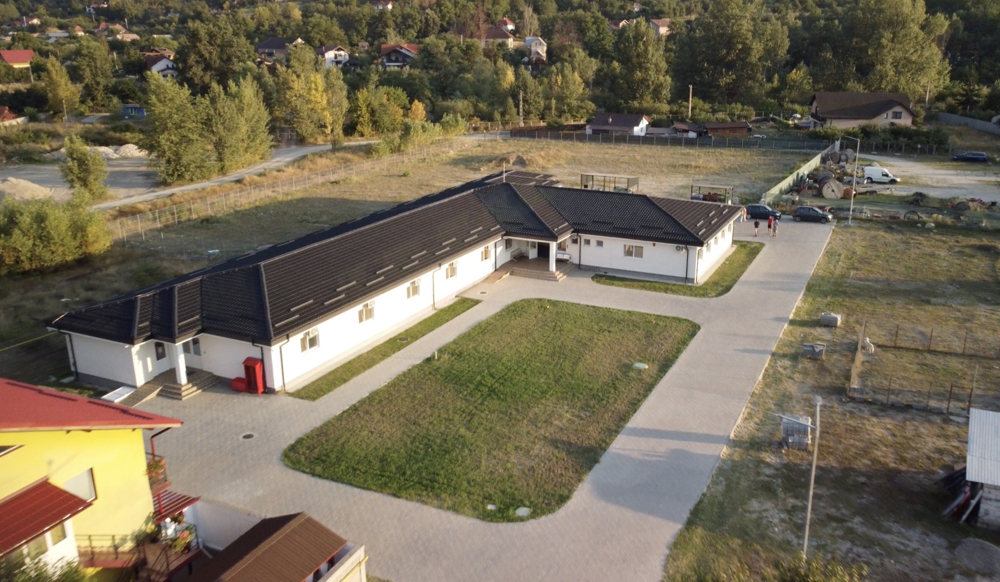
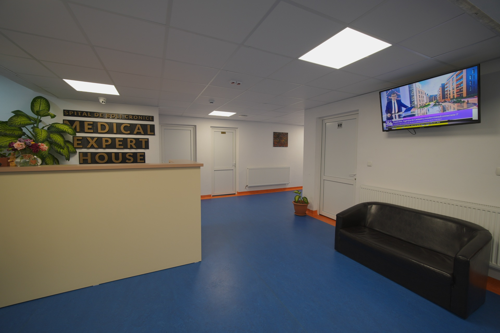
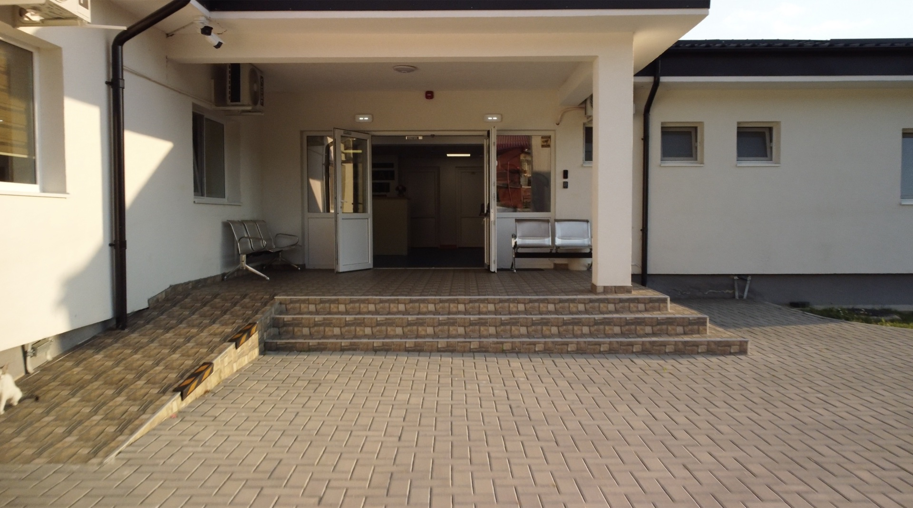
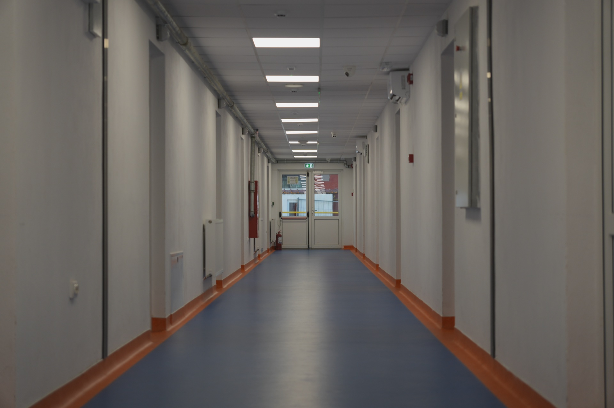

Spitalul Medical Expert House oferă spitalizare continuă, monitorizare de specialitate și terapii adaptate fiecărui diagnostic într-un cadru pavilionar modern, igienizat și liniștit, situat în satul Vlăduceni, comuna Păușești-Măglași (jud. Vâlcea).

Construit la cele mai înalte standarde sanitare, Medical Expert House oferă servicii integrate de spitalizare continuă, recuperare medicală și monitorizare permanentă pentru pacienții cu afecțiuni cronice.

Primire PaciențiSpațiu primitor dotat cu birou de triaj, informare și înregistrare a pacienților, unde familiile primesc suport complet.

100% AccesibilRampă dedicată pentru cărucioare rulante, uși largi automate și trasee fără trepte, adaptate pacienților cu mobilitate redusă.

Standarde SanitareHoluri aerisite, linoleum medical antibacterian cu ridicare pe perete, iluminat LED de precizie și sisteme avansate anti-incendiu.
Explorați galeria noastră foto cu saloanele, terasa exterioară și zonele de relaxare.
Abordăm fiecare caz pe baza unor protocoale medicale individualizate, asigurând supraveghere clinică și administrare riguroasă a tratamentelor 24/7.
Controlul hipertensiunii arteriale rezistente, insuficienței cardiace cronice, monitorizare EKG și prevenirea complicațiilor vasculare.
Monitorizare glicemică, insulinoterapie și mese dietetice asigurate prin catering autorizat (3 mese calde + gustări conform indicațiilor medicului).
Terapii pentru artroze, artrite, dureri articulare cronice, menținerea mobilității și suport fizic pentru deplasare sigură.
Administrare profesionistă de tratamente recomandate de medicii specialiști, oxigenoterapie și hidratare parenterală controlată.
Consiliere de specialitate, comunicare periodică cu familia și asistență dedicată pe toată durata spitalizării.
Asistenți medicali și infirmiere calificate asigură igiena corporală, alimentația, schimbarea pansamentelor și prevenirea escarelor.
Procesul este simplu și transparent, fără birocrație inutilă.
Sunați la numărul 0774 503 392 pentru a discuta cazul pacientului, disponibilitatea locurilor și detaliile specifice.
Actul de identitate al pacientului și dosarul medical anterior (istoric clinic, analize recente sau medicație prescrisă).
Prezentarea la sediul din Păușești-Măglași, evaluarea medicală inițială la recepție și instalarea confortabilă în salon.
Spitalul este amplasat într-un cadru natural ferit de poluare și zgomot urban, oferind aer curat și o atmosferă propice însănătoșirii.